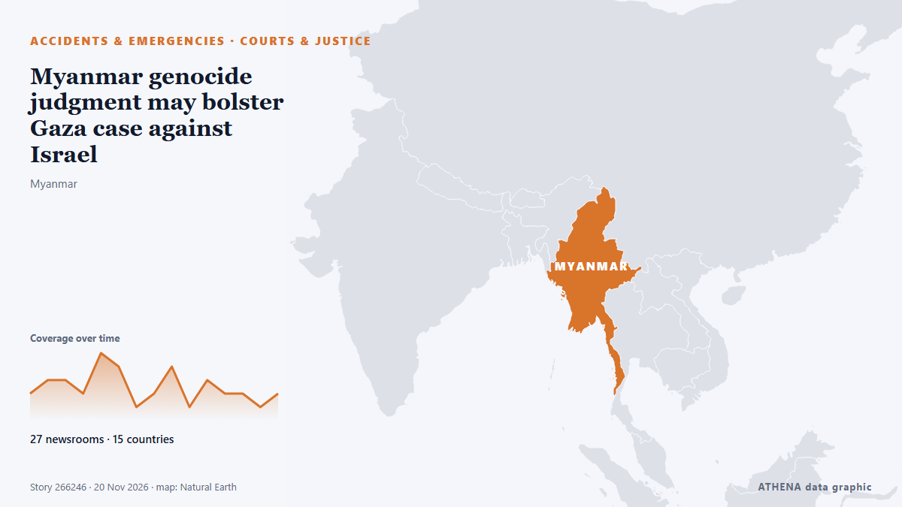

Myanmar genocide judgment may bolster Gaza case against Israel

By Anthony Deutsch and Stephanie van den Berg THE HAGUE, Nov 20 (Reuters) - The International Court of Justice's landmark ruling that Myanmar committed genocide against the Rohingya will strengthen… από Al-Monitor
Τι άλλαξε 29 νέες αναφορές από 22 μέσα τις τελευταίες 24 ώρες.
Δείτε τις πηγές ›Τεκμήριωση: Επαρκής
Αναφέρθηκε ανεξάρτητα από 27 μέσα σε 15 χώρες από τις 19 Νοε, πρώτο το Hindustan Times· η κάλυψη εξασθενεί. Το ATHENA εκτιμά τον κίνδυνο υψηλό (6.7/10), κυρίως λόγω της σοβαρότητάς του και της εμβέλειάς του. Βεβαιότητα 88% (υψηλή): το επιβεβαιώνουν 27 ανεξάρτητα μέσα, μέση αξιοπιστία 74%. Μέσα ανά χώρα: Ισραήλ (4), Τουρκία (4), Μιανμάρ (Βιρμανία) (4). Κάλυψη: 19 Νοε έως 20 Νοε, 29 ώρες.
Γιατί έχει σημασία: Η σελίδα παρακολουθεί τη σύγκρουση που αφορά το Ισραήλ, τη Γάζα, τη Δυτική Όχθη και τον Λίβανο — στρατιωτικές εξελίξεις, ανθρωπιστική κατάσταση και διπλωματία — όπως την καλύπτουν μέσα από όλο τον κόσμο.
Τι άλλαξε: 29 νέες αναφορές από 22 μέσα στο 24ωρο έως 20 Νοε.
Πρώτη διατύπωση: ICJ Myanmar ruling could undermine Israel's defense against Gaza genocide charges - analysis
ΑυτοματοποιημένοΕπιλέχθηκε, ομαδοποιήθηκε και βαθμολογήθηκε με τη δημοσιευμένη μέθοδο της ATHENA από 27 ανεξάρτητα μέσα. Ο τίτλος είναι του μέσου· οι προτάσεις της ATHENA ακολουθούν σταθερά πρότυπα - δεν τις γράφει παραγωγική ΤΝ. Πώς λειτουργεί →
Πώς να διαβάσετε αυτή τη σελίδα
- Τι διαβάζετε
- 27 μέσα σε 15 χώρες ανέφεραν αυτό το γεγονός. Οι αναφορές παρακάτω εμφανίζονται με τη σειρά που δημοσιεύτηκαν· κάθε τίτλος ανοίγει το αρχικό άρθρο. Το ATHENA δεν γράφει δικά του ρεπορτάζ.
- Η εκτίμησή μας
- Για την καταγραφή — Οι αναφορές περιγράφουν ένα ολοκληρωμένο, εσωτερικό, εμπορικό ή προσωπικό ζήτημα. Το καταγράφουμε ώστε να βλέπετε ποιος το ανέφερε και πότε. Δεν παρακολουθούμε εδώ κίνδυνο ευρύτερης σύγκρουσης.
- Πόσα στοιχεία υπάρχουν
- Επαρκής Αρκετά ανεξάρτητα μέσα συμφωνούν, αλλά η εικόνα μπορεί ακόμη να αλλάξει.
Αφού αφαιρεθούν οι επαναλήψεις, τα άσχετα και τα παλιά στοιχεία, υπολογίζονται 25 από τις 37 αναφορές που παρατίθενται· το 100% των τίτλων αντιστοιχεί στο γεγονός.
Περίπου το 32% των τίτλων είναι ανάλυση ή άποψη και όχι απλό ρεπορτάζ.
- Τι δεν σημαίνει
- Το ATHENA μετρά πώς καλύπτεται ένα γεγονός, όχι αν είναι αληθές. Δεν είναι πρόβλεψη, κρίση για το ποιος έχει δίκιο ή συμβουλή.
- Τι θα την άλλαζε
- Αναφορές από άλλα ανεξάρτητα μέσα που δείχνουν διαφορετική εξέλιξη, ή σαφής επιβεβαίωση ή διάψευση από επίσημη πηγή.
Εκτίμηση R2 · ανανεώνεται με κάθε ενημέρωση της σελίδας. Το ATHENA δεν έχει δημοσιεύσει ακόμη ιστορικό επιδόσεων για αυτές τις εκτιμήσεις· όταν το κάνει, θα συνδέεται εδώ.
Με μια ματιά
Επιλέγεται, βαθμολογείται και γράφεται από τη δημοσιευμένη μεθοδολογία του ATHENA. Κανένας συντάκτης δεν παρεμβαίνει σε μεμονωμένα γεγονότα. Πώς παράγεται ›
| 19 Nov 12:43 UTC | 2 |
|---|---|
| 19 Nov 14:43 UTC | 3 |
| 19 Nov 16:43 UTC | 3 |
| 19 Nov 18:43 UTC | 2 |
| 19 Nov 20:43 UTC | 5 |
| 19 Nov 22:43 UTC | 4 |
| 20 Nov 00:43 UTC | 1 |
| 20 Nov 02:43 UTC | 2 |
| 20 Nov 04:43 UTC | 4 |
| 20 Nov 06:43 UTC | 1 |
| 20 Nov 08:43 UTC | 3 |
| 20 Nov 10:43 UTC | 2 |
| 20 Nov 12:43 UTC | 2 |
| 20 Nov 14:43 UTC | 1 |
| 20 Nov 16:43 UTC | 2 |
| 19 Nov 13:28 UTC | 5.0 |
|---|---|
| 19 Nov 15:34 UTC | 6.2 |
| 20 Nov 17:27 UTC | 6.7 |
Γιατί αυτοί οι αριθμοί
Σημασία
Πόσο πολύ και πόσο εμφανώς αναφέρεται η είδηση.
Κίνδυνος
Τι περιγράφουν οι αναφορές, βαθμολογημένο για πιθανή ζημιά. Δεν είναι πρόβλεψη.
Βεβαιότητα
Πόσο καλά την στηρίζουν οι ανεξάρτητες πηγές.
Η κάλυψη — ποιος το ανέφερε και πότε
ο τίτλος όπως δημοσιεύτηκε · ανοίγει το πρωτότυπο- Hindustan Times · ΙνδίαHT Evening Brief Nov 19: Cyclone Akvan to make landfall tomorrow; Putin-Trump-Xi issue peace declaration; Myanmar ruled guilty of Rohingya genocide
- The Jerusalem Post · ΙσραήλICJ Myanmar ruling could undermine Israel's defense against Gaza genocide charges - analysis
- The Daily Star — page reader · ΜπανγκλαντέςAnalysis / Myanmar guilty of genocide. But who will enforce the verdict?
- Arab News · Σαουδική ΑραβίαUK says expelling Myanmar defense attache after ICJ genocide ruling: FM
- France 24 English · ΓαλλίαICJ ruling on Myanmar genocide: ‘Historic victory for Rohingya, landmark for international justice’
- Taipei Times · ΤαϊβάνMyanmar guilty of genocide: top UN court
- The Conversation (global) · ΑυστραλίαMyanmar genocide ruling is a watershed moment in international justice – with huge ramifications for other cases
- The Guardian · Ηνωμένο ΒασίλειοMyanmar ruling gives new relevance to genocide convention and is ‘full of messages’ for Israel
- Sydney Morning Herald · ΑυστραλίαMyanmar found guilty of genocide
- Arab News · Σαουδική ΑραβίαUS says it is assessing implications of UN court decision on Myanmar
- The New York Times (World) · Ηνωμένες ΠολιτείεςMyanmar Genocide Ruling Sets Up Court Fight Over Israel and Gaza
- Anadolu Agency (English) · ΤουρκίαSwitzerland expects compliance with ICJ genocide ruling against Myanmar
- The Jerusalem Post · ΙσραήλUS assessing implications of International Court of Justice's Myanmar genocide ruling
- Anadolu Agency (English) · ΤουρκίαEU urges Myanmar to fully implement ICJ's genocide ruling 'without delay'
- The Straits Times · ΣιγκαπούρηMyanmar genocide ruling sets up court fight over Israel and Gaza
- The Daily Star — page reader · ΜπανγκλαντέςMyanmar found guilty of genocide. What happens now?
- Law.com · Ηνωμένες ΠολιτείεςFoley Hoag Partner Leads Team in Landmark Victory in Genocide Case Against Myanmar
- Daily Maverick · Νότια ΑφρικήINTERNATIONAL JUSTICE: SA sold weapons to Myanmar while it was committing genocide, sparking calls for charges
- The Straits Times · ΣιγκαπούρηUS warns against ‘politicisation’ of ICJ, studying Myanmar ruling
- Livemint · ΙνδίαWhy This Genocide Ruling Matters Way Beyond Myanmar
- Free Malaysia Today · ΜαλαισίαWhat’s Malaysia’s stance on Myanmar junta after ICJ ruling, asks Santiago
- Malaysiakini · ΜαλαισίαAfter ICJ's Myanmar genocide ruling, Charles demands PM explain red carpet for junta chief
- The Jerusalem Post · ΙσραήλGenocide must be proven, not proclaimed, the ICJ ruling on Myanmar shows - editorial
- AllAfrica · AFRSouth Africa: Rights Group Calls for Criminal Probe Into SA Arms Sales to Genocide-Linked Myanmar
- Myanmar Now · Μιανμάρ (Βιρμανία)UK orders expulsion of Myanmar defence attaché after ICJ genocide ruling
- The Irrawaddy · Μιανμάρ (Βιρμανία)US Warns Against ‘Politicization’ of ICJ, Studying Myanmar Ruling
- Myanmar Now · Μιανμάρ (Βιρμανία)As ICJ delivers genocide ruling, Myanmar junta leader welcomes diplomatic role in regional bloc
- Free Malaysia Today · ΜαλαισίαInternational court’s genocide ruling ‘not fair’, says Myanmar spokeswoman
- Myanmar Now · Μιανμάρ (Βιρμανία)Myanmar junta rejects ICJ genocide ruling as unfair, invokes Trump, Xi, and Putin
- TRT World · ΤουρκίαIsrael wary as ICJ’s Rohingya ruling could shape Gaza genocide case: Report
- CBC News (alternative feed) · ΚαναδάςWhat an international court's historic genocide ruling could mean for future cases
- Times of India · ΙνδίαMyanmar genocide verdict divides world, opens Pandora's box for Israel
- Haaretz (English) · ΙσραήλMyanmar's genocide defense failed at the ICJ. Israel made many of the same arguments
- Middle East Eye · INTIsraeli experts warn Myanmar genocide ruling could strengthen Gaza case at ICJ
- Al-Monitor · Ηνωμένες ΠολιτείεςMyanmar genocide judgment may bolster Gaza case against Israel
- Asharq Al-Awsat (English) · Σαουδική ΑραβίαMyanmar Genocide Judgment May Bolster Gaza Case Against Israel
- Anadolu Agency (English) · ΤουρκίαSwitzerland calls ICJ ruling against Myanmar 'important step forward' toward justice for Rohingya